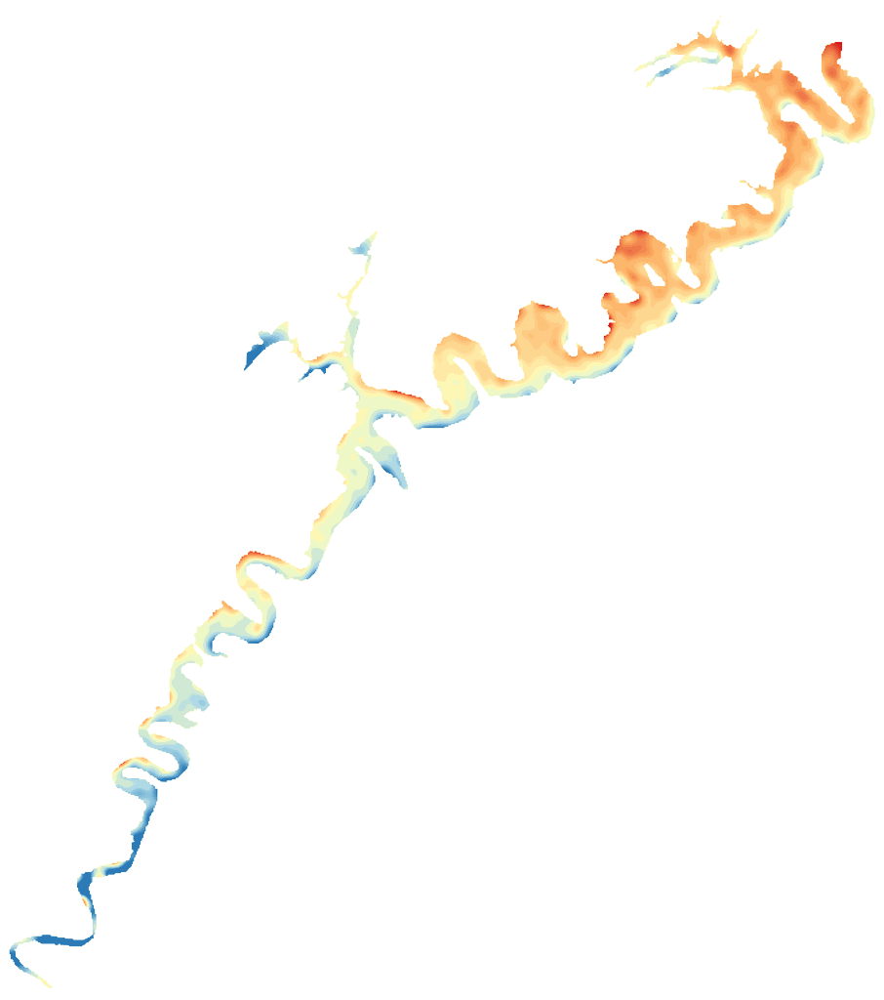

LakeScope › PA
Raystown Lake today
Updated 2026-11-26 - Atlas Labs
Clear water, 49°F water, level falling, 7 ft below normal, windy Thursday (18 mph NE).
Water level
778.36 ft
USGS gauge 01563100 - 2026-11-26
7-day trend: falling (-0.63 ft). Compared with normal for this date: -6.5 ft (same weeks, 2016-2025).
Water clarity and algae
Clear water Last clear view: over a week ago. 1 cloudy pass since.
Surface temperature
49°F
seen from space on 2026-11-22

Ice
Open - 0% ice cover
Estimate from weather and satellite, not a measurement. Check the ice yourself before going on it.
Weather, next 3 days
| Day | Sky | High / low | Wind | Rain |
|---|---|---|---|---|
| Thursday | Rain Showers | 48 / 41°F | 18 mph NE | 100% |
| Friday | Rain Showers | 49 / 37°F | 10 mph SW | 90% |
| Saturday | Partly Sunny | 51 / 34°F | 12 mph W | 14% |
Sunrise 07:11 - sunset 16:48 - Full moon. National Weather Service.
Get the LakeScope app: alerts and the 3-D view of Raystown Lake